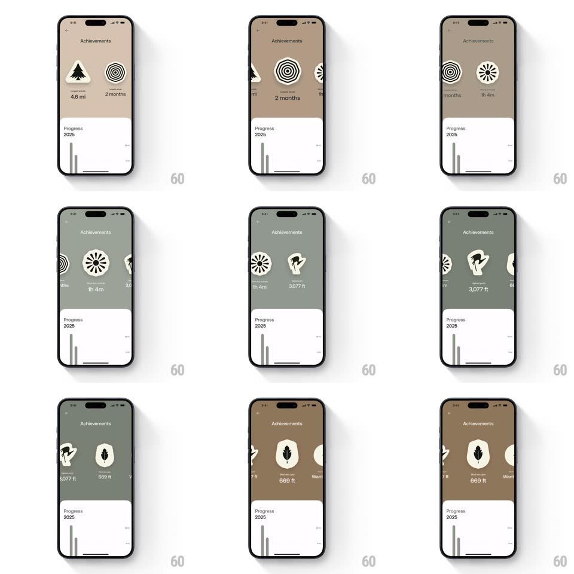

Media
Frame-by-frame

Rebuild this interaction 1:1: AllTrails' achievements carousel - swiping horizontally through circular badges scales the centered one up, retints the whole upper screen to the badge's color, and snaps to the nearest badge.

Rebuild this interaction 1:1: AllTrails' achievements carousel - swiping horizontally through circular badges scales the centered one up, retints the whole upper screen to the badge's color, and snaps to the nearest badge. ## Integration Integration: stack-agnostic spec - springs given as stiffness/damping, timed motions as duration + curve; map every value to your framework and animation library of choice. ## Scene Achievements screen: an upper area showing a horizontal row of circular badge emblems (tree "4.6 mi", target "2 months", pinwheel, wing "3,077 ft", leaf "669 ft") with the value under the centered badge, over a full-bleed tint that matches the active badge; a fixed white "Progress 2025" sheet with a bar chart at the bottom. ## Motion spec Pattern: swipeable scaling badge carousel with synced background. - Drag: badges translate 1:1; the center badge scales up (0.8 -> 1.15) and the side badges shrink (1.15 -> 0.8) continuously by distance from center. - Tint: the upper background crossfades through each badge's color (tan, olive, sage, brown) as the drag crosses the midpoint between two badges (300ms equivalent tied to drag position). - Label: the centered badge's value fades in under it (150ms) once it is within 20% of center. - Release: snaps to the nearest badge (spring ~320/22, 300ms) with a 2% overshoot on the center scale. - The Progress sheet never moves with the carousel. ## Calibration - Scale, tint, and label are all continuous functions of carousel offset - nothing waits for the snap. - Only one value label is visible at a time. ## Reduced motion Keep 1:1 tracking; remove the overshoot. ## Don't miss - The tint covers the whole upper area behind the badges, edge to edge. - Side badges peek in from both edges to show swipeability.